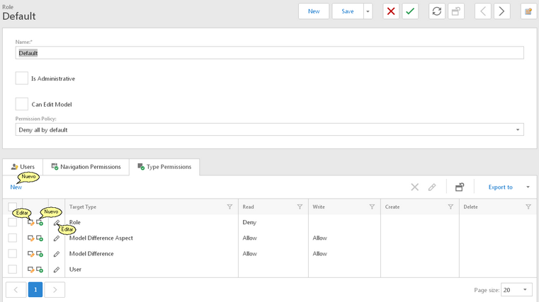
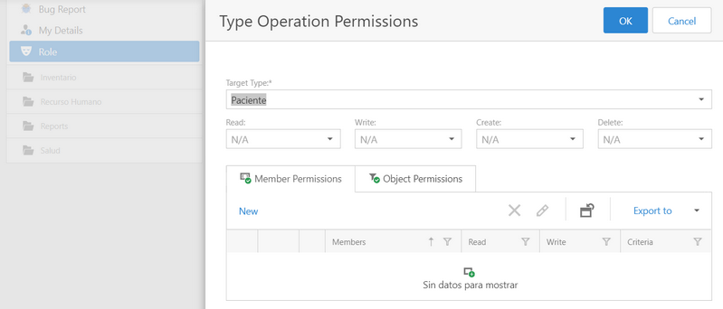
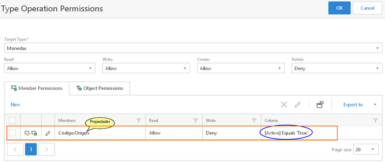
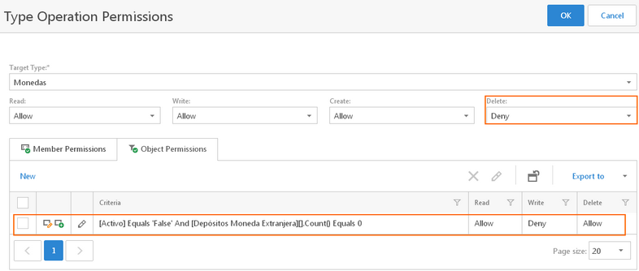
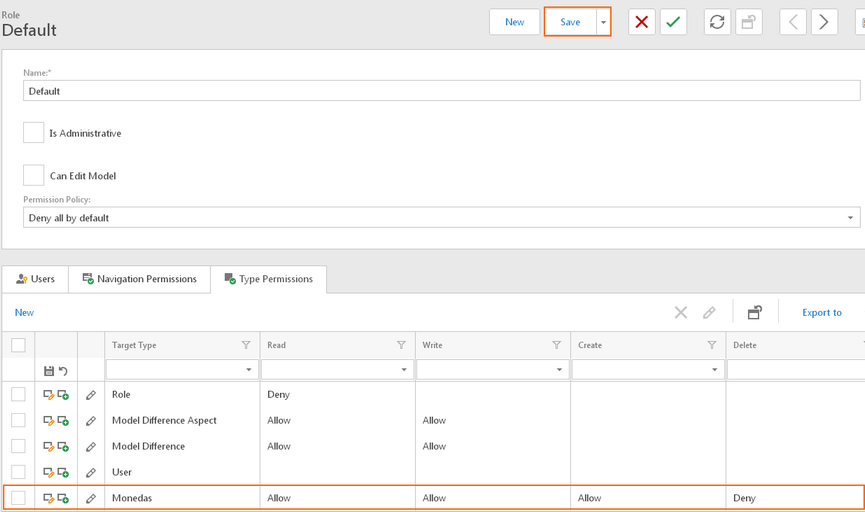

|
<< Click to Display Table of Contents >> Navigation: Seguridad > Editar Permisos para Tipos de Objetos |
Los tipos de objetos de negocio corresponden a las tablas en la base de datos. En el componente de seguridad puede definir diferentes políticas a nivel de BO, de manera independiente de la seguridad de la base de datos, con una mayor flexibilidad, granulidad (y complejidad).
Para agregar, editar o quitar permisos para los Tipos de Objeto de Negocio, es necesario seleccionar y poner en edición el role para que se habilite la edición y la barra de acciones en la pestaña Tipo Permisos (Type Permissions).
Los pasos a seguir son:
1.Seleccionar la opción Role del submenú Seguridad en la navegación de opciones del sistema.
2.Cuando el role no existe crearlo, sino seleccionarlo y dar clic en el botón Editar.
3.Al seleccionar y dar doble clic sobre el role se muestra la vista de detalle de solo lectura.
4.Cuando el role no esta en modo de edición, dar clic en el botón Editar.
5.Seleccionar la pestaña Tipo Permisos (Type Permissions).

6.Para agregar una política de permisos sobre los tipos de objetos de negocio, dar clic en la acción New (nuevo) como se muestra en la imagen anterior. Para editar dar clic en la acción Editar.
7.Al elegir crear un permiso (acción New), se muestra el formulario correspondiente en una ventana popup que se cierra cuando da clic en la acción OK, siempre que se cumplan las validaciones; o abandone la creación del registro dando clic en la acción Cancelar.

Los datos solicitados y que deben completar son los siguientes:
a.Seleccionar el tipo de objeto de negocios (Target Type), al cual se aplicará la política de seguridad. Corresponde a nivel de base de datos a una o más tablas.
b.Los permisos siguientes:
•Lectura
•Escritura
•Creación
•Eliminación
En los cuatro casos anteriores, la política puede ser: Permitir (Allow), Denegar (Deny).
c.Opcionalmente, puede definir permisos para las propiedades del objeto de negocio (seleccionado en el paso a del numeral anterior), dando clic en la pestaña Permisos de Miembros (Member Permissions). Las propiedades corresponden a las columnas en la tabla de la bd.
En cualquier caso, los permisos para las propiedades, puede ser de lectura y escritura. La política puede ser: permitir (Allow) o denegar (Deny). Puede definir condiciones en los datos, que deben cumplirse para aplicar la política de seguridad. Ver la siguiente imagen de ejemplo, en la cual para el BO Monedas, se agrega una política de solo lectura para las propiedades Codigo y Origen, cuando los registros (de monedas) estan activos (Activo = True).

d.Opcionalmente, puede definir políticas de seguridad para los objetos o datos (corresponde a los registros en la tabla de la bd) , dando clic en la pestaña Object Permissions. La política de seguridad a nivel de objetos (registros) aplicarán unicamente cuando se cumplen las condiciones indicadas en la propiedad (columna) criteria. En el siguiente ejemplo, borrar objetos (registros)de Monedas no está permitido (política Delete a nivel de Monedas es Deny), sin embargo; se crea una política a nivel de objetos en la cual, cuando una moneda esta inactiva (Activo = false) y no existe ninguna referencia a la moneda en los depósitos en moneda extranjera, entonces se permite leer y se puede borrar, además no está permitido modificar el registro.

8.Repetir los pasos 6 y 7 por cada política de seguridad que desea agregar, la cual puede ser al mismo o diferentes Tipos de objeto de negocios (BO).
9.Guarde los cambios en el role. Esta acción guarda los cambios realizados en los miembros del role (usuarios), permisos de navegación y por supuesto los permisos en los Tipos de objetos (BO).

Ver Además
•Role
•Editar Políticas de Navegación